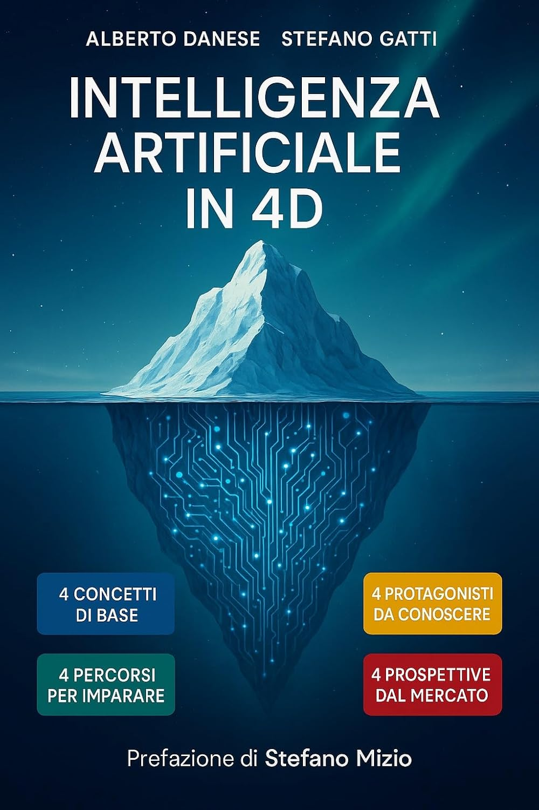
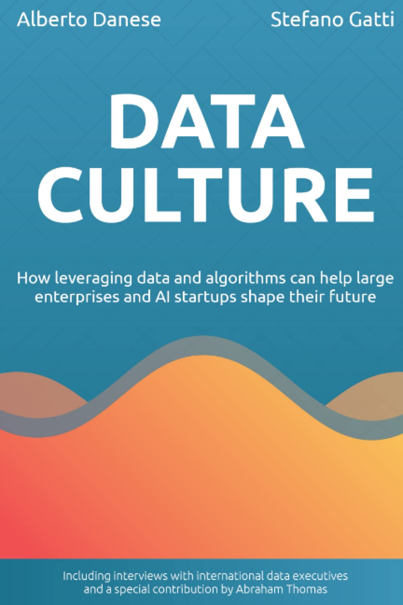
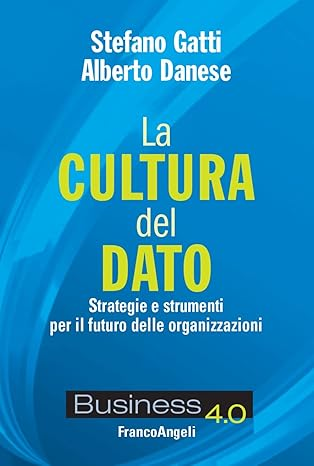
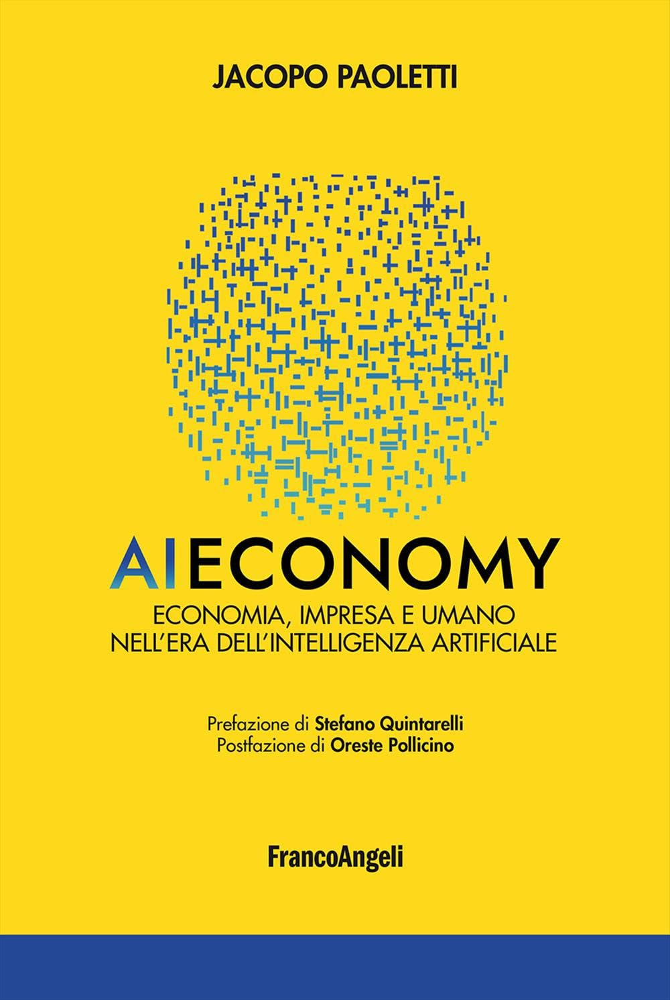
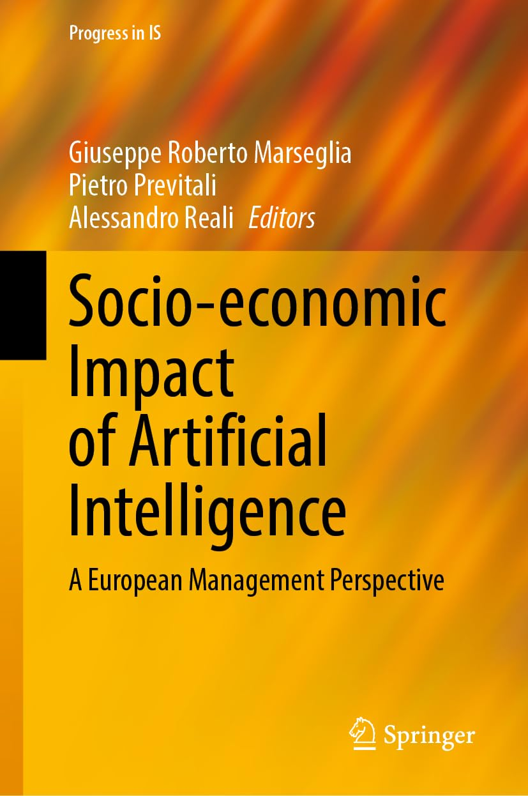
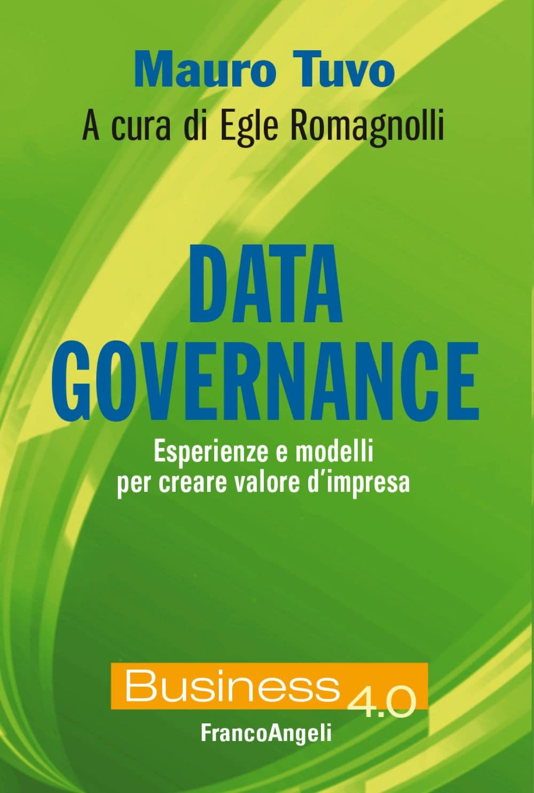
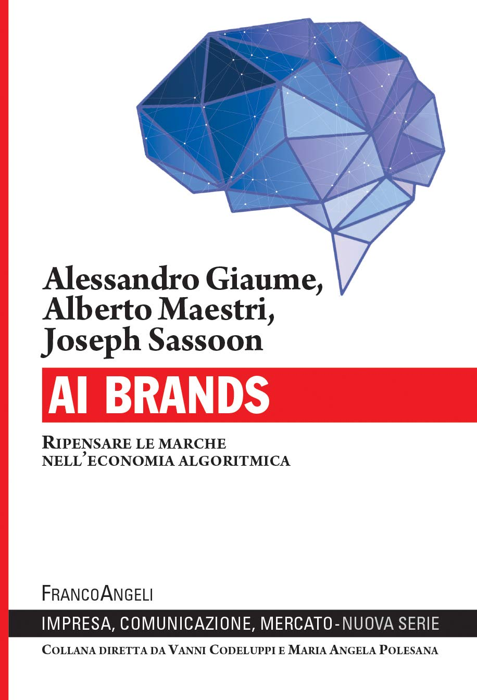
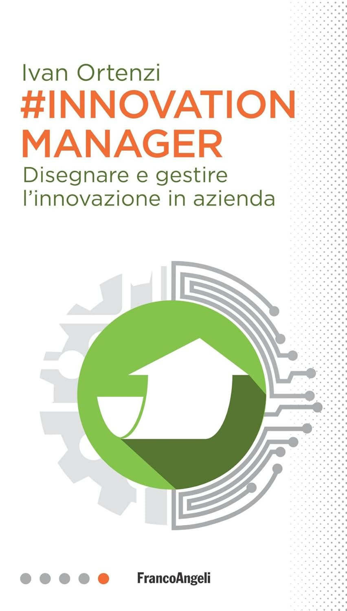
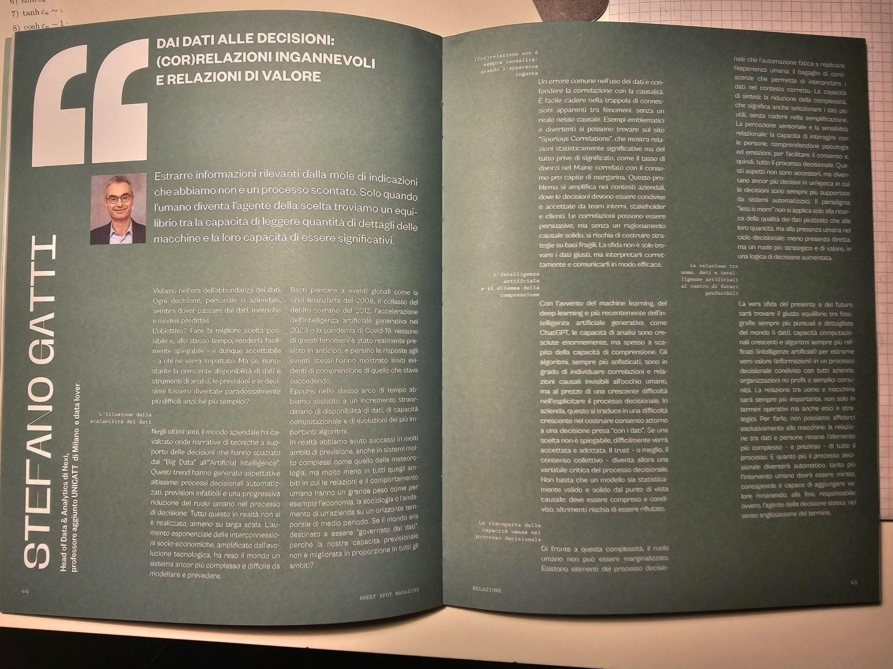

Libri

Intelligenza Artificiale in 4D
Guida pratica per navigare la rivoluzione AI in quattro dimensioni: Concetti di Base (LLM, RAG, agenti intelligenti), Protagonisti (Karpathy, Mollick, Kozyrkov, Andrew Ng), Percorsi per Imparare (dal gioco ai progetti pratici), Prospettive dal Mercato (AI Economy, investimenti, futuro del lavoro).
«Stimolante, leggibile, ricco di diramazioni» — Stefano Mizio
«Stimolante, leggibile, ricco di diramazioni» — Stefano Mizio

Data Culture
Why do 85% of AI projects fail? Why are data scientists leaving seemingly perfect jobs? This practical guide explores the missing piece: culture — that intangible but fundamental element that enables effective data strategy. With concrete examples and insights from data executives in large enterprises and innovative AI startups.

La Cultura del Dato
Come evitare il fallimento dell'85% dei progetti Data Science (secondo Gartner). Questo libro integra dati, algoritmi e organizzazioni per costruire una cultura condivisa che coordini organizzazione e strategia. Con contributi di Massimo Chiriatti, Alessandro Giaume, Vincenzo Di Nicola, Marina Geymonat, Fabio Baraghini, Carlo Torniai.
#AI Expert
L'algorithm economy è centrale per le imprese competitive. Questo libro esplora i nuovi ruoli emergenti: data scientist, data engineer, data scouter, chief data officer, chief AI officer. Quali competenze devono possedere? Quali strumenti padroneggiare? Come integrare il fattore umano? Con case histories e interviste.
Ho contribuito a...

L'Economia delle Intelligenze Artificiali
L'intelligenza artificiale come nuova infrastruttura invisibile che riorganizza economia, impresa e consumo. Una riflessione interdisciplinare su processi macro e micro economici.

Socio-economic Impact of Artificial Intelligence
A European Management Perspective
Ethical issues of AI in business from a European management perspective. Conseguenze dell'AI sui modelli di business e considerazioni strategiche per le regolamentazioni UE.
In principio era ChatGPT
Mafe de Baggis & Alberto Puliafito
Come allearci con le macchine invece di combatterle. Un libro per imparare a lavorare meno e meglio includendo le AI come alleate nella vita quotidiana.

Data Governance by Design
Come implementare data governance "by design" con paradigmi moderni (data mesh, data fabric, DataOps). Il fattore cruciale: la diffusione di una cultura del dato.

AI Brands
AI, machine learning e piattaforme digitali come nuovi decision-maker. Il nuovo significato del marketing e gli obiettivi di marketer e brand specialist.

#Innovation Manager
Competenze necessarie e strumenti fondamentali per guidare la trasformazione digitale in azienda, attraverso l'esperienza diretta di chi ricopre questo ruolo.
I miei articoli più recenti

Sweet Spot Strategy Vol.2
Dai dati alle decisioni: (cor)relazioni ingannevoli e relazioni di valore
Data strategy e processo decisionale
CioReview Europe
Data Culture: the real challenge of every forward-looking organization
Cultura organizzativa e trasformazione data-driven
Agile Italia Magazine · Luglio 2022
Dati & algoritmi & Innovazione: gemelli vincenti, spesso falliti, ma non troppo diversi!
Metodologie agile e progetti data science
Agile Italia Magazine · Settembre 2021